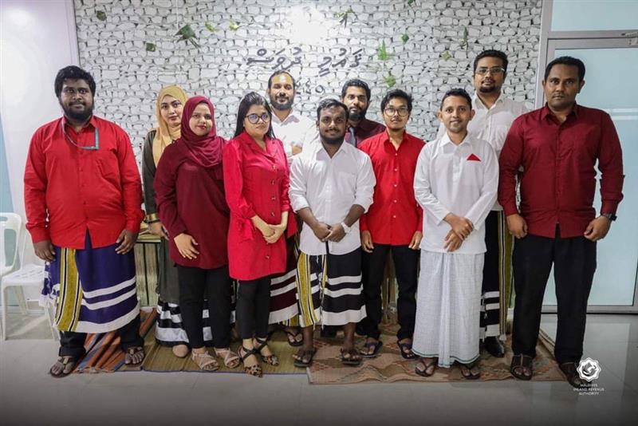
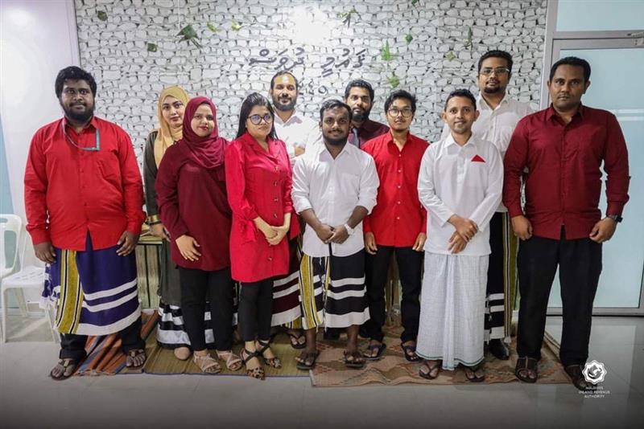

-
Shimaah
Best wishes CG, as you move forward; your leadership at MIRA has left an indelible mark of excellence and innovation.
-
Shifan
As you move on to new adventures, know that your leadership has left an indelible mark. Your guidance has been a source of inspiration. Wishing you continued success and fulfillment in your journey ahead. Farewell.
-
Ifrah
Thank you for your contributions to MIRA. I wanted to sincerely thank you for your outstanding efforts as you go on with your future endeavors.
-
Mohamed
Your values and work ethic, as well as your ability to balance fitness with work, truly inspire me every day and compel me to follow your example. I wish you the best of luck in your future endeavors.
-
Zaeema
Your legacy of excellence will undoubtedly endure, and your departure leaves a void that will be hard to fill. Wishing you a future filled with success. May your journey ahead be as remarkable as the impact you've had on us.
-
Shaamikh
Wishing you a fond farewell and continued success in all your future endeavors.
-
Aisha
We highly value your contributions to MIRA and wish you continued success in your future endeavors.
-
Maisha
As you step down from your role, I extend our heartfelt gratitude for your exceptional leadership. Wishing you a fond farewell and continued success in all your future endeavors.
-
Imran
Best of luck in your new chapter, and may your passion drive positive change.
-
Samooh
Thank you & good luck!
-
Anwar
Every new beginning comes from some other beginning’s end. Wishing you all the luck and happiness in the world.
-
Manik
Thank you, CG, for your exceptional leadership and inspiration. I believe that you have played a major role in all the successes of MIRA since its inception. Your absence will be genuinely felt. Wishing you continued success in all your future endeavors.